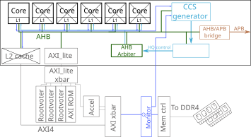
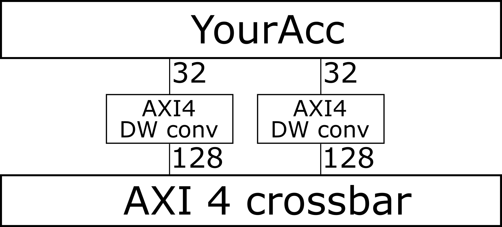
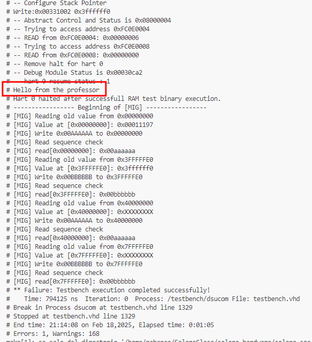

In this lab session we will create an HLS accelerator in C++, then we will synthetize such accelerator and integrate into a commercial SoC. Finally we will write some software to interact with such an accelerator and compare the performance of this accelerator with that of the CPU running some code that performs an analogous function.
Understanding the target SoC and accelerator integration
The SoC that we will be integrating our accelerator in is the SELENE H2020 SoC represented in the bellow figure. As you can see, there are several crossed out elements, in specific, 5 cores and the L2 cache. They are crossed as they are disabled in your version of the SoC to speed up the simulation process. If you want you can enable them using the config.vhd file.

As you can observe, there is one accelerator instantiated in the above figure. That is the accelerator you will need to create and instantiate in the SoC. This accelerator is configured using the AXI_lite network. This network is accesed using an AHB to AXI_lite bridge represented in the figure as the AXI_lite block. Then, AXI_lite information travels through the AXI_lite xbar, where it is routed to its destination using a memory mapping mechanism. Now that we understand how the accelerator configuration connection is configured, I want to take a look at the accelerator connections to the AXI xbar. They appear as AXI connections in this figure, but, in reality, they are special connections. As the accelerator that we will program consumes 32-bit integers, it instantiates 32-bit wide AXI interfaces. However, our NoC uses 128-bit wide AXI interfaces. To adapt our accelerators we use AXI UP/Downsizers that are automatically instantiated when using theaxi_dw_wrappermodule found at interconnect\libnoc\axi_width_converter.vhd

Exercises
Exercise 1. Generating an HLS kernel
Using Vitis HLS and the previous session knowledge create an accelerator that takes two vectors (as pointers) and a length argument, and produces the dot product as a result. The dot product produced should be stored in the control registers to be read by the user using the control interface. Both vectors should be read using the AXI4 interface, with ports named gmem1 and gmem2 respectively.
Your HLS kernel interface should be the following:
uint32_t dot_prod_kernel(uint32_t* a, uint32_t* b, uint32_t length){}
Write your kernel and it’s testbench, then test it and synthetize it.
Once you have tested your kernel, synthetize it and check if it implements DSPs, if it does force Vitis to not do so by using the following pragma
#pragma HLS RESOURCE variable=result core=Mul_LUT
While DSPs are very beneficial for performance, we will be using a 3rd party simulator, where DSP behavior is not defined, as such, if any DSP is instantiated our accelerator will not work.
Upload your dot_prod_kernel.cpp file to poliformat as yourname_dot_prod_kernel.cpp
You will need the synthetized kernel files, so don’t close Vitis HLS yet.
Exercise 2. Integrating the accelerator into our target SoC
Setting up your environment
Using Visual Studio code connect to the fractal.gap.upv.es machine with the 3322 port and your previous alumno username. Your ssh connection command should look like:
ssh -p 3322 alumno[0-15]@fractal.gap.upv.es
Once connected to fractal you will clone the target github repository and initialize all variables with the following commands:
git clone https://github.com/willmontaraces/SeleneNANOlabs.git
cd SeleneNANOlabs
source setup_2020.sh
git submodule update --init --recursive
Then, open the SeleneNANOlabs folder with VScode, you might need to source the setup_2020.sh script again. This is the main folder of our SoC. The relevant folders for this practice are the following
software: where you will find a main file and a makefile for writing our softwareinterconnect\wrapperwhere you will find the xbar_lite and xbar wrappers for modifying the memory maps and adding our acceleratoraccelerators\dotProdwhere you will find the vhdl wrappers for your acceleratorselene-soc\rtl\selene_core.vhdwhere you will instantiate our acceleratorselene-soc\selene-xilinx-vcu118where you will perform simulations of the SoC
Integrating your accelerator
Copy your SystemVerilog rtl into accelerators\dotProd, now it is a good time to check that you followed all the naming conventions that I specified in the previous exercise, since, if you didn’t, the dot_prod_krnl.vhd wrapper file will not compile.
Then, execute the following command to add the new files to the simulator file list
find | grep ".v$" > vlogsyn.txt
Check that a file named vlogsyn.txt is created inside the dotProd folder containing all your added Verilog files.
Now we need to instantiate our accelerator in the selene_core.vhd file. Open it and read the code from line 593 until the end of the instantiation. Replace the —Number— comments with the actual port number for your accelerator to go into.
Then update the number of managers and subordinates of the AXI and AXI_lite xbars in the config.vhd file in the selene_xilinx_vcu118 folder. You will need to modify the CFG_AXI_N_INITIATORS, CFG_AXI_N_TARGETS,CFG_AXI_LITE_N_INITIATORS, CFG_AXI_LITE_N_TARGETS values to the correct ones.
Then, go to the wrapper folder and check the xbar_lite_wrapper.sv and xbar_wrapper.sv, then answer the following questions in a file named yourname_questions.txt
- Why does the AXI4 crossbar wrapper only have one address rule?
- Why does the AXI_lite crossbar have six address rules?
- What is the address range of our accelerator?
- Which peripheral would the processor access if it accesses address
0xfffc0750? - Which peripheral would the processor access if it accesses address
0x50000000?
Check that your accelerator integration was successful (at least on compile time) by going into the selene-soc\selene-xilinx-vcu118 folder, running make student-sim and checking that it prints a Hello from the professor into your terminal, be patient, it might take a couple of minutes for your system to compile and simulate.

Exercise 3. Writing software
Now that you SoC is compiling with the accelerator, let’s program it.
To do so go to the SeleneNANOlabs/software folder where you will find main.c and a Makefile
To compile the main file execute make inside the software folder. To move the compiled file for simulation in the SoC execute make move, then, you can simulate it by going into the selene-soc\selene-xilinx-vcu118 and executing make student-sim
int main()
{
int start, end;
int cpu_time_used;
int length = 10;
int a[length], b[length];
for(int i = 0; i < length; i++)
{
a[i] = rand() % 100;
b[i] = rand() % 100;
}
start = read_csr_safe(cycle);
int result_sw = dot_prod_sw(a,b,length);
end = read_csr_safe(cycle);
cpu_time_used = end-start;
printf("Time taken sw: %d cycles\n", cpu_time_used);
start = read_csr_safe(cycle);
int result_hw = dot_prod_hw(a,b,length);
end = read_csr_safe(cycle);
cpu_time_used = end-start;
printf("Time taken hw: %d cycles\n", cpu_time_used);
printf("Result sw: %d, Result hw: %d\n", result_sw, result_hw);
return 0;
}Complete the above code by implementing the dot_prod_sw and dot_prod_hw functions. The dot_prod_hw function should launch the dot product in your accelerator. To program it
look at your accelerator memory mapped control signals in dot_prod_kernel_control_s_axi.v.
Once this example is done, change vector length to 1000 and rerun the test. Which is faster, the CPU or the HW accelerator? Answer with your data in the yourname_questions.txt file.
Once you have completed all exercises, do a make clean in the selene-xilinx-vcu118 folder, then zip your project and upload it to Poliformat, alternatively push your changes to a new github repository and paste the link in the Poliformat task, remember to upload the questions from yourname_questions.txt
Appendix. Debugging in the Selene SoC
Once you have compiled your hardware with the make student-sim command you can cancel that simulation and launch questasim gui by doing make sim-launch, then you can log your accelerator signals to see if your software is performing hardware orchestration correctly. To preserve your waveform between simulations you can save your waveform by clicking file/save and then restore it by executing the tcl command do wave.do.